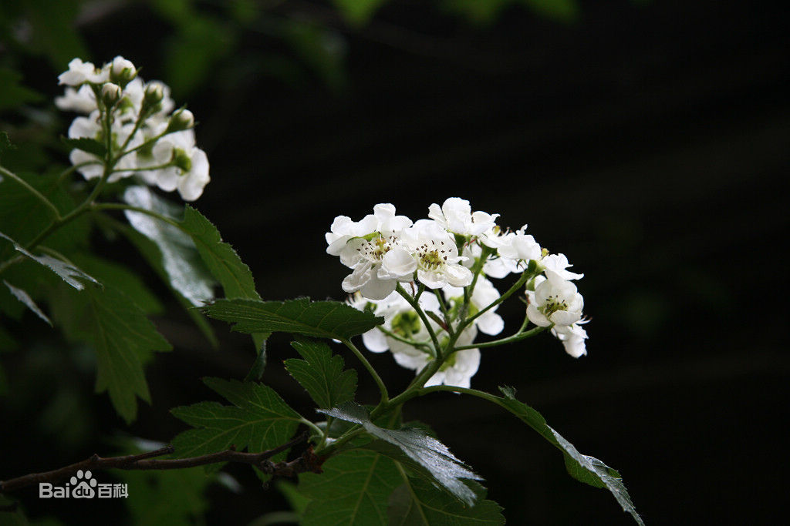

 茶花，又名山茶花，山茶科植物，属常绿灌木和小乔木。古名海石榴。有玉茗花、耐冬或曼陀罗等别名，又被分为华东山茶、川茶花和晚山茶。茶花的品种极多，是中国传统的观赏花卉，“十大名花”中排名第七，亦是世界名贵花木之一。分布于重庆、浙江、四川、江西及山东；日本、朝鲜半岛也有分布。 山茶是常绿阔叶灌木或小乔木。枝条黄褐色，小枝呈绿色或绿紫色至紫褐色。叶片革质，互生，椭圆形、长椭圆形、卵形至倒卵形，长4～10cm，先端渐尖或急尖，基部楔形至近半圆形，边缘有锯齿，叶片正面为深绿色，多数有光泽，背面较淡，叶片光滑无毛，叶柄粗短，有柔毛或无毛。花两性，常单生或2～3朵着生于枝梢顶端或叶腋间。花梗极短或不明显，苞萼9～10片，覆瓦状排列，被茸毛。花单瓣，花瓣5～7片，呈1～2轮覆瓦状排列，花朵直径5～6cm，色大红，花瓣先端有凹或缺口，基部连生成一体而呈简状；雄蕊发达，多达100余枚，花丝白色或有红晕，基部连生成筒状，集聚花心，花药金黄色；雌蕊发育正常，子房光滑无毛，3～4室，花柱单一，柱头3～5裂，结实率高。荫果圆形，外壳本质化，成熟茹果能自然从背缝开裂，散出种子。山茶花为常绿花木，开花于冬春之际，花姿绰约，花色鲜艳，郭沫若同志盛赞曰：“茶花一树早桃红，百朵彤云啸傲中。”对云南山茶郭老也曾赋诗赞美：“艳说茶花是省花，今来始见满城霞；人人都道牡丹好，我道牡丹不及茶。